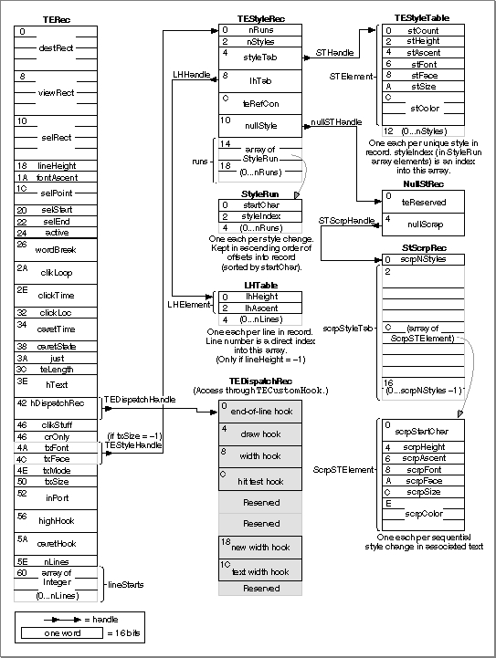

Data Structures
This section describes the data structures and their contents which provide information to the TextEdit routines. Both monostyled and multistyled edit records have a 32 KB maximum text size.The TextEdit data structures are defined as follows:
Figure 2-15 shows the TextEdit data structures and their fields to help you understand how the TextEdit data structures are organized and related. (For a monostyled edit record, TextEdit creates only the
- The edit record, defined by the
TERecdata type, stores the display and editing information for TextEdit.- Along with various subsidiary data structures, the style record, defined by the
TEStyleRecdata type, stores the character attribute information for the text of the edit record.- The style run table, defined by the
StyleRundata type, is an array that contains the boundaries of each style run and an index to its character attribute information in the style element array.- The style table, defined by the
TEStyleTabledata type, contains one entry for each distinct set of character attributes used in the text of the edit record.- The line-height table, defined by the
LHTabledata type, provides an array of line heights to hold the vertical spacing information for a given edit record. It also contains line ascent information.- The null style record, defined by the
NullStRecdata type, contains the null scrap which is used to store character attribute information for a null selection.- The style scrap record, defined by the
StScrpRecdata type, is used by routines to store character attribute information temporarily.- The scrap style table, defined by the
scrpStyleTabdata type, is contained in the style scrap record.- The scrap style element record, defined by the
ScrpSTElementdata type, contains the character attribute information for an element in the scrap style table. One scrap style element record exists for each sequential attribute change in the associated text.- The TextEdit dispatch record, defined by the
TEDispatchRecdata type, contains the internal addresses of the TextEdit routines for the end-of-line hook, the draw hook, the width measurement hook, the new width measurement hook, and the text width measurement hook, unless you replace them with the addresses of your own customized versions of these routines.- The text style record, defined by the
TextStyledata type, is used by several routines to pass character attribute information between the application and a routine. The record is passed as a variable or reference parameter.TERecandTEDispatchRecdata structures.) To read from and write to these data structures, use the TextEdit routines rather than modifying these fields directly. This practice ensures future compatibility.For most operations, you do not need to know the exact structure of an edit record; TextEdit routines gain access to the record for you. However, when manipulating character attribute information, you might find it helpful to understand how the data structures used to contain and track character attribute information are organized.
Figure 2-15 The TextEdit data structures and fields
- Note
- The space beyond the hooks in the TextEdit dispatch record is reserved for internal use. If you attempt to use this private area, you may corrupt TextEdit data.

Subtopics
- The Edit Record
- The High Hook and Caret Hook Fields
- The Style Record
- The Style Table
- The Line Height Table
- The Null Style Record
- The Style Scrap Record
- The Scrap Style Table
- Text Style Record